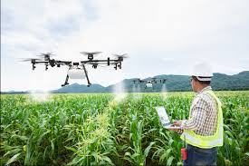

Layanan Yang Kami Sarakan Untuk Di Gunakan Dalam Sistem Pertanian

Sistem Prediksi Permintaan dan Pemesanan Berbasis Data
Sistem ini membantu pengusaha kuliner memprediksi dan mengelola kebutuhan bahan baku, menghindari pemborosan, dan menjaga pasokan yang stabil.
Blockchain untuk Transparansi Rantai Pasokan
Blockchain melacak asal bahan baku, menjamin kualitas dan keamanan untuk pengusaha kuliner serta meningkatkan kepercayaan konsumen.
Penggunaan Drone untuk Pemantauan dan Analisis Pertanian
Drone dapat memantau tanaman dan kelembaban tanah secara real-time, membantu petani meningkatkan produktivitas dan mengurangi ketergantungan pada tenaga kerja.